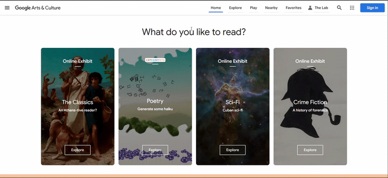

IDM241 Microinteraction - Alpha Description
https://artsandculture.google.com/
Triggers
Exhibit Card:
Rules and Feedback
Exhibit Card:
- Hover on
- Image slightly scales up
- Images brightness decreases
- Changes to finger
- Hover on
- Image slightly scales down
- Images brightness increases
- Cursor changes to pointer
Loops and Modes
None
Animated Gif
